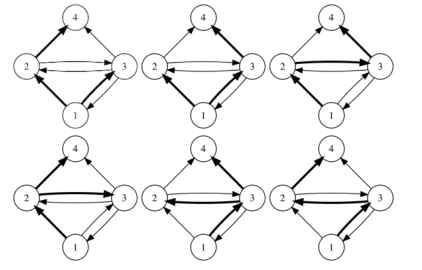

当今社会，在社交网络上看朋友的消息已经成为许多人生活的一部分。通常，一个用户在社交网络上发布一条消息
（例如微博、状态、Tweet等）后，他的好友们也可以看见这条消息，并可能转发。转发的消息还可以继续被人转
发，进而扩散到整个社交网络中。在一个实验性的小规模社交网络中我们发现，有时一条热门消息最终会被所有人
转发。为了研究这一现象发生的过程，我们希望计算一条消息所有可能的转发途径有多少种。为了编程方便，我们
将初始消息发送者编号为1，其他用户编号依次递增。该社交网络上的所有好友关系是已知的，也就是说对于A、B
两个用户，我们知道A用户可以看到B用户发送的消息。注意可能存在单向的好友关系，即A能看到B的消息，但B不
能看到A的消息。
还有一个假设是，如果某用户看到他的多个好友转发了同一条消息，他只会选择从其中一个转发，最多转发一次消
息。从不同好友的转发，被视为不同的情况。
如果用箭头表示好友关系，下图展示了某个社交网络中消息转发的所有可能情况。

初始消息是用户1发送的，加粗箭头表示一次消息转发